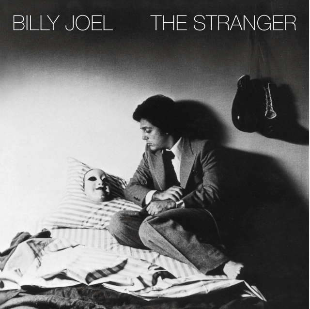
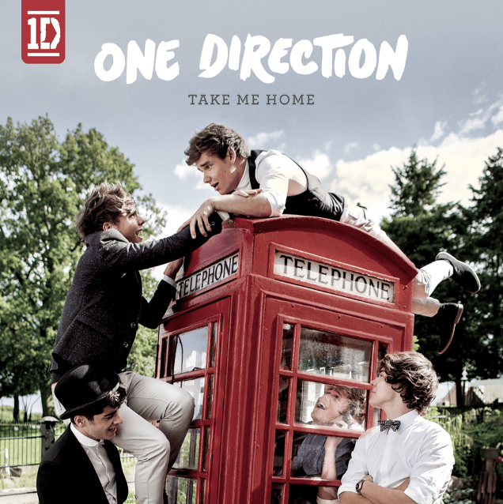
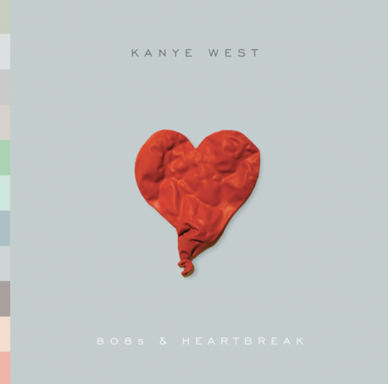

Introduction:
As soon as I heard about Suno, an AI platform that is able to generate songs, I knew I had to try it! I am a huge fan of music, from boybands, to rap, to musicals and more, I’m almost always listening to something in my headphones. For my first go-around with the technology– given the limited number of credits I had with the free version– I decided to use the “Custom Mode” (in which you can add lyrics, music style, and a title) to see how Suno interpreted pre-existing songs. To understand the full scope of its abilities, I tested on several genres and with artists I knew well to see how it matched their music generally. Here are my findings!
Test One: Billy Joel’s “Vienna,” Old Rock

Spotify Link to Real Song:
https://open.spotify.com/track/4U45aEWtQhrm8A5mxPaFZ7?si=7c0a0d7834f54d5b
Prompt:
Lyrics:
Slow down you crazy child You’re so ambitious for a juvenile But then if you’re so smart tell me Why are you still so afraid? (mmmmm) Where’s the fire, what’s the hurry about? You better cool it off before you burn it out You got so much to do and only So many hours in a day (Ay) But you know that when the truth is told That you can get what you want Or you can just get old You’re gonna kick off before you even get halfway through (Oooh) When will you realize, Vienna waits for you? Slow down you’re doing fine You can’t be everything you want to be before your time Although it’s so romantic on the borderline tonight (tonight) Too bad, but it’s the life you lead You’re so ahead of yourself that you forgot what you need Though you can see when you’re wrong You know you can’t always see when you’re right (you’re right) You got your passion, you got your pride But don’t you know that only fools are satisfied? Dream on, but don’t imagine they’ll all come true (Oooh) When will you realize, Vienna waits for you? Slow down you crazy child Take the phone off the hook and disappear for a while It’s alright, you can afford to lose a day or two (oooh) When will you realize, Vienna waits for you?
Style of Music:
Essential slow pop/rock with accordion
Title:
Vienna
Responses:
Version 1: https://app.suno.ai/song/697ffec2-43e9-43d8-acfd-41f9948e2516
Version 2: https://app.suno.ai/song/0e3e8abb-32df-44a3-87a9-007b42d02943
Observations:
Billy Joel is one of my very favorite artists, so I wanted to kick off my experiment using one of his most iconic songs: “Vienna.” His music is more traditional in a way that I thought it would be slightly easier for Suno to replicate, especially because his style is older, his discography is massive, and his genre easily contained within the essential slow rock category. I fed Suno roughly half of the original song’s lyrics (as it did have a word limit on the version I was using), and gave me the above tracks. The responses were really exciting, though certainly not perfect.
Notes:
- While the replicas did not follow the same beat/cadence of the original, I was really impressed by the fact that the technology was able to sing the lyrics in a way that kept them rhyming and in rhythm, even if it wasn’t the same as the actual song.
- The voice used genuinely has a robotic quality in a way I can’t quite describe. While it sang in tune and even had somewhat complex harmonies, it felt soulless/flat, kind of like how singer’s sound when they overuse auto-tune.
- The style wasn’t fully replicated, but honestly still adhered to the broader category of classic rock– just not Billy Joel’s version. The voices sound much younger than him, so the quality and tone is just really different.
- I was really interested to see that the platform created cover art! I won’t get into that in this post, though, as I plan to do a follow-up that explores the artwork Suno creates to match the songs.
Test Two: One Directions’s “I Would,” Boyband Pop

Spotify Link to Real Song:
https://open.spotify.com/track/6Fe0bY8vDxBnN7rDgu3ACE?si=34de374ad9d54843
Prompt:
Lyrics:
Lately I found myself thinking (thinking) Been dreaming about you a lot (a lot) And up in my head I’m your boyfriend (boyfriend) But that’s one thing you’ve already got He drives to school every morning (morning) While I walk alone in the rain (in the rain) He’d kill me without any warning (warning) If he took a look in my brain Would he say he’s in L-O-V-E? Well, if it was me, then I would, I would Would he hold you when you’re feeling low? Baby, you should know that I would, I would Would he say he’s in L-O-V-E? Well, if it was me, then I would, I would Would he hold you when you’re feeling low? Baby, you should know that I would
Style of Music:
Upbeat boyband pop
Title:
I Would
Responses:
Version 1: https://app.suno.ai/song/ecb648e9-19e9-43d5-a9fc-75cc6d6cf9f7
Version 2: https://app.suno.ai/song/3249cf01-0aba-4ab4-9997-872b20194e0b
Observations:
One Direction is the only music group that I like as much as Billy Joel, and their British-boyband style is much more standardized and niche than the entire genre that is rock, so I thought they would be a good option to test next.
Notes:
- Wow. These singers sound SO much more similar to 1D than the previous did to Billy Joel. Though the voices didn’t sound precisely the same as the original song, they reminded me a lot of other songs by the band (“One Thing” and “Up All Night” specifically came to mind), so I’m assuming that One Direction’s discography makes up a lot of the training data for boyband content on Suno.
- Both songs do a really good job with incorporating the background vocals, denoted by the parentheses. They adhered exactly to the lyrics I inputted, which was really impressive.
- Beyond following the lyrics exactly, these songs actually extended their length by repeating sections of the lyrics to reach the ~2-minute mark, though I didn’t prompt Suno to do so. I thought this was very clever and a creative liberty that was useful without going against instructions.
- These replicas actually did miss some of the rhyme schemes (eg: “Would he say he’s in L-O-V-E is meant to rhyme with”Well if it was me” and it did not in either case) but I still think they were really solid pieces.
Test Three: Kanye West’s “Heartless,” R&B Inspired Rap/Pop

Spotify Link to Real Song:
https://open.spotify.com/track/4EWCNWgDS8707fNSZ1oaA5?si=4f3fcb8462904fdb
Prompt:
Lyrics:
In the night I hear ‘em talk The coldest story ever told Somewhere far along this road He lost his soul to a woman so heartless How could you be so heartless? Oh, how could you be so heartless? How could you be so, cold as the winter wind when it breeze, yo Just remember that you talkin’ to me though You need to watch the way you talkin’ to me, yo I mean after all the things that we’ve been through I mean after all the things we got into Ayo, I know of some things that you ain’t told me Ayo, I did some things, but that’s the old me And now you wanna get me back and you gon’ show me So you walk around like you don’t know me You got a new friend, well, I got homies But in the end it’s still so lonely
Style of Music:
Upbeat pop/rap, with hip hop and R&B influences
Title:
Heartless
Responses:
Version 1: https://app.suno.ai/song/76b92932-35e1-4b0e-ac5a-3b99f91f4e36
Version 2: https://app.suno.ai/song/00bd24f7-0e3c-4cf9-9246-6a6d62cac18a
Observations:
As a final trial, I decided to see how Suno did with a song from an artist who is known for carving out their own genre/having an especially unique style while also incorporating a new challenge: rap. I chose a Kanye West song that has both singing and rapping so as to further test Suno’s understanding of rhythms and rhyme schemes.
Notes:
- So these are definitely the replicas that I like the least. I think because Kanye produces just unique music, this just fell flat.
- The singers are now multiple genders! Really cool that Suno used a woman for the singing and a guy for the rap in the first version. Unfortunately, the guy sounds insanely white– whereas Kanye is a black guy– and the AI voice has very little cool factor like most rappers– even with white guys, think of Eminem.
- These songs also were extended via repeating lyrics which was nice! It would also be really cool to see it generate appropriate lyrics at the end on its own. I will play around with that in the future!
- The rap section in V1 just sounds very stereotypical, both in voice and background.
Conclusion
I am SO glad I got to play around with Suno in this test. I was truly impressed with its complex understanding of music, even if the voices felt basic/dull or the rhyming was off at times, and enjoyed that it always offered two versions in its response to any prompt. I don’t think we need to be worried about AI taking over the music industry just yet, but if Suno is any indication, AI is going to catch up pretty quickly. These songs might not be fully fleshed-out, but I would definitely consider adding them to a playlist or two.